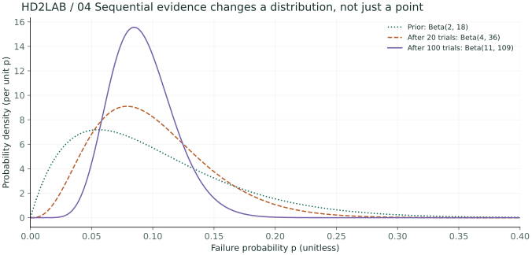
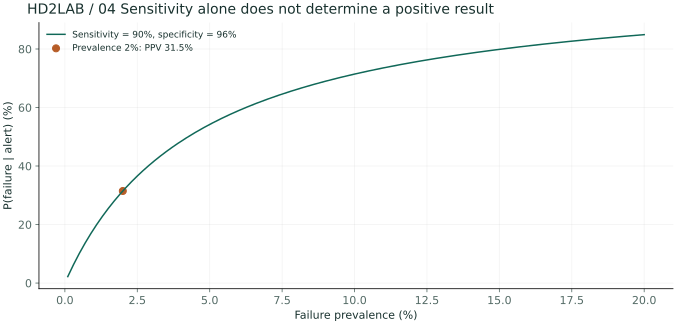
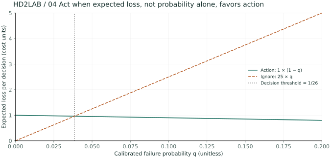
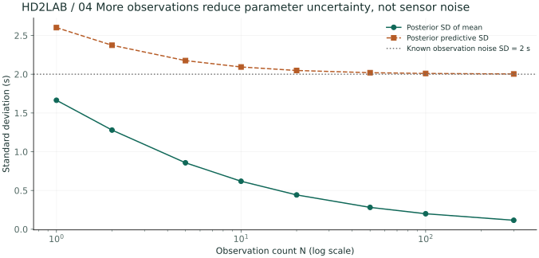

Even under the conditions of 01 /, the values will still change.
Let’s measure how much the virtual reservation notifications arrive a few seconds earlier or later than the expected time. The time offset varies under the same conditions. If we model the observations using a Gaussian distribution with a mean of μ and a known standard deviation of σ, we can separate the variability from the mean value.
02 / The probability refers to the occurrence of an event, while the density refers to the position of the event in space.
A probability space consists of a set of outcomes Ω, a set of events, and a probability measure. A random variable is a function that assigns numerical values to the outcomes. Discrete variables involve summing probabilities, while continuous variables involve integrating the density of the distribution.
F(t) = P(X ≤ t)
[ 0,0.2] The density with a uniform distribution is… 5 And the density is… 1 It’s possible to exceed that limit, but the total integral remains the same. 1 In a continuous distribution, the probability of occurring at a single point is… 0 Therefore, p(x) “Exactly” x It shouldn’t be read as “probability of one.”
μ represents the position, while σ² represents the spread. The multidimensional covariance indicates the degree to which the spread changes with each direction. The density changes as the unit of the variable changes.
Calculations that reverse the condition of 03 /
If the values of p(a,b) = p(a|b)p(b) and p(a,b) = p(b|a)p(a) are equal, then the Bayes’ theorem is obtained. The denominator is either summed over all possible causes or integrated over the entire range of possible causes.
p(D) = ∫p(D|θ)p(θ)dθ
| Elements | Meaning |
|---|---|
| Dictionary p(θ) | Model for parameters before observation |
| Udo p(D|θ) | When θ is fixed, the plausibility of the observation remains. |
| Afterlife: p(θ|D) | A parameter distribution that reflects the observations made. |
Let’s assume that A is responsible for requests, and 80%, B and 20% are also responsible for handling certain tasks. The probability of delays for each of them is 0.05,0.20, respectively. When considering delays, the probability of a delay occurring at B is (0.20×0.20)/(0.80×0.05+0.20×0.20) = 0.5). However, just because delays are more likely to occur at B, it doesn’t mean that most of the requests will definitely result in delays at B.
The average that best describes the observations in the case of 04 /
Let’s say that the offset of y = [2,3,4,3] seconds is a conditional independent variable, and let’s call it σ = 2 seconds. The squared distance is the product of the density, while the log-squared distance is the sum of those products. If we subtract the terms that have nothing to do with μ, then what remains is the problem of minimizing the squared error.
μ̂ML = (1/N)Σiyi = 3 seconds
MLE selects the point with the highest likelihood, rather than the distribution of parameters. If σ is also an unknown parameter, then the denominator of the Gaussian distribution in MLE is N. This differs from the denominator of the degrees of freedom in the biased sample variance, which is N−1.
05 / is the result of adding the pre-distribution values from previous observations.
The prior distribution of μ is assumed to be a Gaussian distribution with mean μ₀ = 0 and variance τ² = 1. After multiplying the likelihood by itself and taking the square of the result, the posterior distribution becomes a Gaussian distribution with mean μ. The degrees of freedom are increased by the variance reciprocal.
mpost = vpost(μ₀/τ² + Σiyi/σ²)
In the previous observations, it was noted that vpost = 1/2, mpost = 1.5 It’s all the same. Since the average and the minimum value of Gaussian distribution are equal,… MAP Figure/Diagram 1.5 The next observation’s prediction variance is… σ² + vpost It’s denoted as = 4.5. This represents both the observed noise and the uncertainty associated with average estimation.
import numpy as np
y = np.array([2.,3.,4.,3.])
sigma2, prior_var, prior_mean = 4., 1., 0.
post_var = 1/(1/prior_var + len(y)/sigma2)
post_mean = post_var*(prior_mean/prior_var + y.sum()/sigma2)
print("MLE:", y.mean(), "MAP:", post_mean)
print("predictive variance:", sigma2 + post_var)The connection between 06 / MAP and regularization
If the regression noise is independent variable N(0,σ²), and the coefficient matrix is also independent variable N(0,τ²), then the negative log posterior distribution is equal to the sum of the squared errors and the penalty terms of L2. The constant term here does not contribute any penalty terms.
α = σ²/τ²
A relationship holds true when certain assumptions about the model and the loss scale are specified. The MAP points do not replace the entire posterior uncertainty.
What happens when the number of samples increases?
In this Gaussian example, if the variance is fixed, then N/σ² becomes larger. As a result, the post-hoc mean becomes closer to the sample mean.
Is MAP always better than MLE?
No. A poorly designed dictionary can actually worsen the predictions. It’s necessary to verify the sample size, complexity, and the suitability of the assumptions used in the model.
It’s necessary to update the posterior distribution of the probability of failure in the case of advanced A /.
Problem to explore In the 20 requests, there were 2 failures. In the next request, it was 80 failures. In the next one, it was 7 failures. Let’s represent the probability of failure as a distribution, rather than just a single ratio.
Assume request failures are conditionally independent Bernoulli(p) observations. The prior is Beta(2,18), with mean 0.1. Observing 2 failures among the first 20 gives Beta(4,36); adding 7 failures among the next 80 gives Beta(11,109). These are fixed fictional aggregate counts, not randomly varied counts.
Beta(a,b) → Beta(a+s,b+n−s)
E[p|D]=(a+s)/(a+b+n), P( – Next failure | D)=E[p|D]
- Multiply the value of pˢ(1−p)ⁿ⁻ˢ by the factorial of the dictionary key. The number of failures and successes is added to the respective parameters Beta.
- Use the previous posterior as the prior for the next block. The final parameters are a=2+2+7=11, b=18+18+73=109. Processing all 100 observations at once gives the same result.
- The posterior mean is 9.2%, also the predictive probability of failure for the next observation. The 95% equal-tailed credible interval for the failure probability p itself is approximately 4.7%~14.9%.
- The interval endpoints are the 2.5%·97.5% quantiles of the CDF obtained by numerically integrating the posterior density. Interpret it as a 95% posterior probability that p lies in this interval, conditional on this model and these observations. It differs from an interval for the number of failures in the next 100 trials.
| Steps/Levels | Distribution | Average | 95% Credit range (approx.) |
|---|---|---|---|
| Before the observation/observation period | Beta(2,18) | 10.0% | 1.3% ~ 26.0% |
| After observing 20 observations | Beta(4,36) | 10.0% | 2.9% ~ 20.9% |
| After observing 100 observations | Beta(11,109) | 9.2% | 4.7% ~ 14.9% |

As time passes and the actual failure rates change, does it mean that observations can be accumulated indefinitely?
If the fixed parameters p and the conditional independence assumptions do not hold, then older observations can distort the current state. It’s necessary to design separate models for each interval, as well as models that account for time-related changes. Additionally, it’s important to consider the weights assigned to different factors when evaluating the results.
Reinterpret the B / alarm threshold values in terms of basal levels and costs.
Problem to explore Detection sensitivity 90% If the alarm goes off, the probability of a malfunction is also high. 90% And when should action be taken?
Assume a fictional inspection system with failure prevalence π=2%, sensitivity 90%, and specificity 96%. Among 10,000 expected cases, 180 of 200 failures trigger alarms, while 392 of 9,800 normal cases trigger false alarms. These are model-based expected counts, separate from the random-score sample in Chapter 1.
π=0.02 ⇒ 180/(180+392) ≈ 31.5%
- First, let’s specify the direction of the conditional probability. The sensitivity is P( alarm/ failure. The probability that we’re interested in is P( alarm/failure.
- During the alarm period, the actual proportion of equipment failures includes those detected in normal equipment as well. If the base rate is low, this component can become more significant.
- Let’s now denote q as the corrected individual failure probability. The cost of taking action when there is no failure is 1. The cost of ignoring the failure when there is one is 25. The cost of taking the correct action is simply 0.
- The expected losses for the “action-based” scenario, denoted as 1−q, are compared with the expected losses for the “ignored” scenario, denoted as 25q. The difference between these two values is then handled in the “action-based” scenario, denoted as q>1/26≈3.85%. The “automated” scenario, denoted as 50%, is not used in this context. In this case, the expected losses for both actions are equal.


Can we apply 1/26 directly to the decision score of SVM, which is f(x)?
No. f(x) The adjusted probability for this example is… q It’s not the case. The threshold for making decisions regarding scores needs to be determined through probability adjustment or separate verification processes. The data used for probability adjustment should also be separated from the final testing process.
Calculate the uncertainty of the next observation, up to the level of C /.
Problem to explore Let’s try to calculate why, even if we know the average delay very precisely, the delay for the next time period won’t be exactly accurate.
The delay variations are set to yᵢ|μ~N(μ,4) seconds² and μ~N(0,9) seconds². In N=1,2,5,10,20,50,100,300, all sample means are fixed at 2 seconds. This allows us to compare only the effects of sample size, rather than comparing cumulative paths of the same random samples. In other words, this is an analytical comparison that depends on the sample means.
μ|D~N(mN,vN)
ynew|D~N(mN,4+vN)
- The post-hoc precision is the sum of the pre-hoc precision of 1/9 and the data precision of N/4. As the number of observations increases, the average post-hoc variance decreases.
- In N=300, the post-hoc standard deviation is equal to 0.115. The predicted standard deviation for the next observation is still around 2.003, which is still close to 2.
- For the entire distribution, we add the conditional observation variance 4 to the average estimated variance vN. The average estimate error and the random variation of individual observations are two different things.
- To reduce observational noise, it’s necessary to improve the sensors and the processes involved in data collection. Alternatively, it’s possible to add features that can enhance the explanatory power of the data. Simply collecting more samples from the same distribution won’t eliminate the assumed observational variance 4.

Expand the core calculation code
An excerpt from the corresponding advanced Python function. Full data generation and helper functions are available in the downloads below.
n = np.array([1, 2, 5, 10, 20, 50, 100, 300])
posterior_variance = 1 / (1/9 + n/4)
posterior_mean = posterior_variance * (2*n/4)
mean_sd = np.sqrt(posterior_variance)
new_observation_sd = np.sqrt(4 + posterior_variance)
print(np.c_[n, posterior_mean, mean_sd, new_observation_sd])Reproduce the results and change conditions
The figures are precomputed from this chapter's advanced Python experiments. The notebook contains code for seven chapters and 28 figure outputs. Calculations require NumPy; regenerating figures also requires Matplotlib.
Place both Python files in the same folder. The calculation script's
--chapter 4 option runs just this chapter. The figure script's
--output ./figures option generates 28 SVG figures.
Further reading: References for related concepts · Terms and Notation